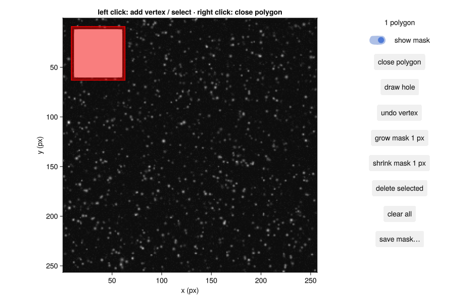
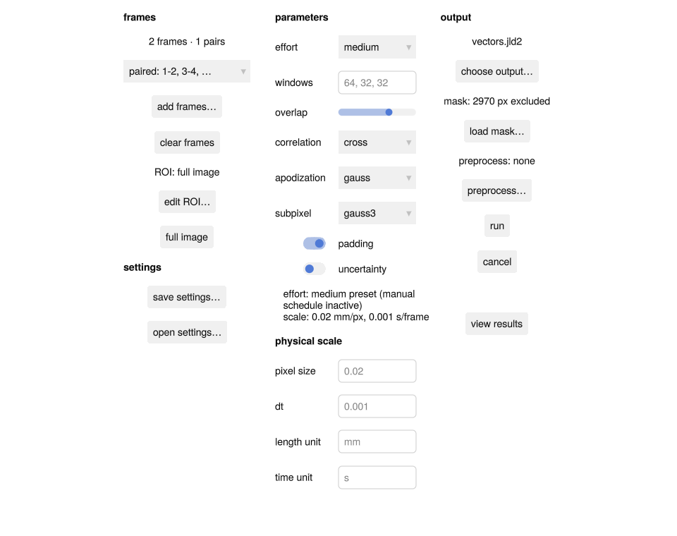
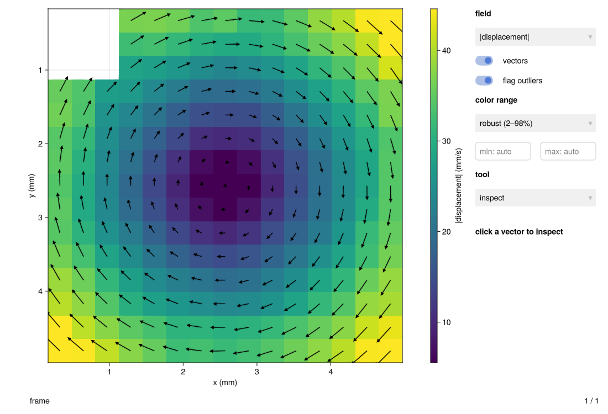

Analyze an image pair in the GUI
Start with two exposures of the same flow. You will make a mask if needed, run PIV, inspect the vectors, and keep the result. For a complete example with sample images, follow Your first PIV session in the GUI.
Install the separate GUI package with pkg> add HammerheadGUI, then open the batch form:
using HammerheadGUI
batch_runner()Add the images
Click add frames… and select your images in acquisition order. Choose paired for separate A/B exposures (1–2, 3–4), or chained for a consecutive sequence (1–2, 2–3). Start with one representative pair before processing a whole recording.
Exclude walls and reflections
Open a mask editor on the first image:
mask_editor("frame_0001.tif")Left-click around the unwanted region; right-click to close the polygon. Turn on show mask to check the red excluded area. Use save mask…, then load mask… in the batch form. These are separate windows; saving the mask and loading it into the batch makes the hand-off explicit.

For holes, mask files, or automatic masks, see Mask reflections and geometry.
Choose settings and units
Choose medium effort for an initial run; the preset chooses the window schedule. Use custom when you want to enter your own schedule, such as 64, 32, 32. Choose an effort level explains the trade-off.
Enter your measured pixel size, the exposure-pair dt, and matching unit labels. For example, 0.02, 0.001, mm, and s mean 0.02 mm per pixel and 1 ms between exposures. If you have a calibration image, the scale tool helps measure a known separation.

edit ROI… opens a rectangle editor when you need only part of the image. preprocess… opens a raw/processed comparison when the particles need conditioning. Use the editor's apply to batch or use in batch action before returning to the run. See Build a preprocessing chain for choosing operations.
Run and inspect
Choose an output file with choose output…, then press run. Completed pairs appear in view results, which opens a separate explorer. cancel stops after the current pair and retains finished results.

Click a vector to read its components and status. Use the field menu to switch between magnitude, components, and diagnostics; the slider browses frames. When a scale is attached, the explorer uses its physical units.
Want a profile or a rotation estimate? Use the explorer's tool and field menus. Inspect flagged vectors before interpreting derivatives such as vorticity.
Keep the results and the settings
Reopen a completed native results file with:
result_explorer("vectors.jld2"; lazy=true)Lazy browsing loads one selected entry at a time.
save settings… writes the form's passes, preprocessing, mask, ROI and scale to a recipe file. open settings… loads a recipe file, or the results file of an earlier run, back into the form: its exact passes appear as the saved settings effort, and the mask, ROI, scale and preprocessing replace the current ones. Every run with an output file also stores its settings in that file, so a results file always records how it was made. Save settings and reuse them shows how to apply the same recipe from a script.
Working with another kind of recording?
For two cameras, start with Calibrate a real stereo rig. stereo_calibration(cr1, cr2; batch) reviews both cameras' calibrations and installs the dewarpers into a stereo_batch_runner form, which runs the synchronized frames. Particle and trajectory results open in the same explorer.
The GUI reference covers scripted controls and embedding views when you are ready to customize the workflow.